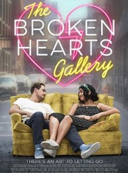

The Broken Hearts Gallery.
Lançamento nacional: 11/09/2020
- Título Original: The Broken Hearts Gallery;
- Diretor:
- Gênero: comédia, romance;
- Elenco:
- Nacionalidade: Norte Americana, Canadense;
- Produção:
- Censura: 16 anos;
- Duração: 1 h e 48 min;
- Sinopse: E se você salvasse uma lembrança de cada relacionamento que você já teve? THE BROKEN HEARTS GALLERY segue a sempre única Lucy (Geraldine Viswanathan), uma assistente de galeria de arte de 20 e poucos anos que mora na cidade de Nova York, que também é uma acumuladora emocional. Depois de ser abandonada por seu último namorado, Lucy se inspira a criar a Galeria do Coração Quebrado, um espaço pop-up para os itens que o amor deixou para trás. A notícia da galeria se espalha, incentivando um movimento e um novo começo para todos os românticos por aí, incluindo a própria Lucy.;
- Roteirista: Natalie Krinsky;
- Produtor: David Gross;
- Distribuição nacional: Sony Pictures Brasil.
Site Oficial: https://www.brokenheartsgallery.movie
Por: cleberslopesjr em 4 de setembro de 2020.